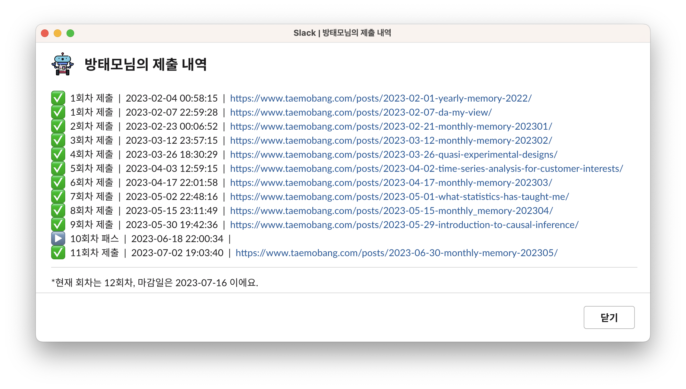

글또 8기 회고
글또 8기 회고
약 6개월에 걸친 글또 8기 활동도 끝을 앞두고 있다. 글또 8기를 회고하는 글을 마지막 12회차 글로 제출하며 활동을 마무리하려고 한다.

글또를 시작한 이유
지난 1월에 글또 8기에 지원했다. 당시 나는 왜 글또에 지원하였는가?
글또 활동을 통해 현업에 데이터 분석 직군으로 있는 분들과 소통을 할 기회를 가지고 싶었다.
- 당시 학계에서 산업계로 이직한 지 5개월 남짓되었던 때라 다들 어떤 고민을 안고, 무슨 생각을 하면서 사는지, 어떤 부분에 관심이 있는지 궁금했다.
주기적인 글쓰기 습관을 다시 들일 필요가 있었다.
- 지난해에 쓴 글이 13개 였는데, 그 중 회고록이 4개였다.
글을 쓰는 것을 좋아하는 사람으로서 그냥 한 번 참가해보고 싶었다.
글또에 제출한 글 회고
1회차
-
- 2022년을 회고하는 것으로 첫 글을 제출했다. 지난 한해 참으로 많은 변화가 있었고, 지금도 많이 배우고 있다. 커리어적으로는 물론이거니와, 개인적인 생각, 가치관에 대해서도. 순간순간에는 내가 잘하고 있는건지 의심이 되었는데, 돌아보니 잘하고 있었던 것 같다. 참 많이 컸다. 하반기도 목표로 하고 있는 것들을 차근차근 달성하여 유종의 미를 거두자.
-
부제는 “데이터 분석을 대하는 나의 자세”였다. 데이터 분석가/과학자를 꿈꾸던 학부생때부터 내가 관심이 있던 바는 오로지 하나였다. “취업 시장에서 나만의 아이덴티티를 가지기 위해서는 어떻게 준비를 해야하는가?” 과거에 이를 주제로 슬기로운 통계생활 블로그에 기고했던 글을 보면 참 기가 찬다.😂
어떤 것을 우선으로 두고 데이터 분석가/과학자 포지션을 준비하면 좋을까에 대해 써봤던 것인데, 학위, 발표력, 포트폴리오 순위를 이룬다. 이때도 역시나 자격증은 맨 뒤로 뒀구나. 이 생각은 지금도 같다. 그러나, 학위는 애매하다. 학위가 그 사람의 능력을 결코 대변하진 않는다. 그러나, 학사만 마친 사람, 석사까지 마친 사람, 박사까지 마친 사람이 있다고 할 때, 그들이 학위 기간 동안 충분한 공부와 고찰을 했다는 가정하에 그들이 똑같은 주제를 배운다고 하면 배운 것을 흡수하여 내것으로 만드는 농도는 분명히 다를 것이다. 학사 레벨에서 보지 못하는 행간을 석사 레벨은 볼 수 있을 것이고, 석사 레벨에서 보지 못하는 행간을 박사 레벨은 볼 수 있을 것이다. 한마디로 정리하면 내용을 이해하는 해상도 자체가 다를 것이라는 말이다. 발표력 = 커뮤니케이션 능력으로 대치할 수 있을 것 같은데 이 부분도 여전히 동의된다.
사내 뉴스룸 인터뷰에서도 유사한 형태의 질문을 받고 답변했지만, 데이터 분석가/과학자 포지션을 준비하는 사람이 갖추어야 할 2가지를 꼽아보라고 내게 묻는다면 나는 여전히 다음의 2가지를 꼽을 것이다:
문제해결능력
현업에서 우리가 마주하는 문제(What)은 언제나 새롭다. Business context, 우리 제품이 나아가고자 하는 방향, 가용할 수 있는 자원의 한계, 데드 라인 등 우리가 문제를 해결해야 할 때에 고려할 것은 너무나도 많다. 주어진 문제에 대한 최적의 Solution을 찾아나가는 역량은 오로지 현업의 데이터 분석가/과학자에게 달려있다. 고로, 문제해결능력은 우리가 갖춰야할 가장 중요한 역량이다.
문제해결능력을 키우기 위해서는 데이터 전처리를 포함한 분석의 매 순간 Why를 던져봐야한다. 이 상황에서 이 방법론이 최선인가? 왜 이 방법론이여야 하는가? 현 Context에서 이 지표를 들여다보는게 맞는가? 등 나 자신에게 던져보는 매 순간의 다양한 질문들은 당신의 문제해결능력을 향상시켜줄 것이다. 또한, 당신을 끊임없이 공부하게 만들어 줄 것이며, 당신만의 아이덴티티를 갖게 해줄 것이다.
커뮤니케이션 역량
데이터 분석가, 과학자가 매일 같이 하는 일은 가설을 세우고 검증한 뒤, 데이터를 기반으로 사람들을 설득하는 것이다. 그리고, 직군의 특성상 개발자와의 소통이 필요한 경우도 적지 않다. 그래서, 커뮤니케이션 역량은 매우 중요하다.
내가 모르는 것을 남에게 명확하게 말할 줄 알아야 하며, 상대방이 모르는 것을 정확하게 캐치하여 그 사람의 수준에 맞춰 쉽게 설명할 줄 알아야한다. 이 또한 커뮤니케이션 역량에 해당한다.
-
-
- 업무적으로는 Streamlit을 이용한 대시보드 개발, 시계열 자료분석에 몰두하고 있었다. 우리 업계에서 꼭 만나뵙고 싶었던 분을 만났던 달이기도 하다. 글또 8기에 선발된 사람들이 발표된 달이기도 하고. 여러모로 의미가 깊었다.
-
- 뉴스 보도자료가 나간 김에 팀 역량을 집중하고 있는 모바일 홈 개인화에 대해 소개했다. 또한, 고객행태분석을 수행하기도 했는데 명확한 가설없이 데이터 분석을 시작하는 행위는 되도록 지양해야 함을 한번 더 느꼈다. 익숙하지 않은 주제의 분석이기도 했지만, 명확한 가설없이 분석을 수행하다보니 여러번 길을 잃었다. 액셔너블한 분석 결과, 결과로부터 명확한 레슨런을 얻기 위해서 가장 중요한 것은 명확한 “가설 설정”이다.
4회차 ▶️ Quasi Experimental Design
- 준실험설계란, RCT가 불가능한 상황에 실험 디자인만을 이용하여 이상적인 Counterfactual과 가까운 비교 가능한 Control 그룹을 찾아내는 것을 말한다. 괜히 이름이 “준”실험설계가 아니다. 자연적으로 실험 환경이 갖추어진다는 점에서 “자연 실험”이라 부르기도 한다. 자세한 사항은 글을 참고하기 바란다.
5회차 ▶️ 시계열 자료분석을 활용한 고객 관심사의 선제적 반영
일련의 시계열 자료분석 방법론들을 활용하여 고객의 관심사를 선제적으로 반영해봤던 경험을 토대로, 분석 간에 사용한 방법론들에 대해 소개했었다. 업무와 관련한 부분이라 자세한 사항은 이야기하기가 힘들어, 중간중간 맥락이 조금 끊기는 부분이 있을 수 있었을 것 같다. 최대한 맥락이 연결되도록 쓰려고 노력하긴 했다만..😂
시계열 분해, 이상점 탐지 및 대치, 변화점 탐지를 활용하여 문제를 해결했는데, 문제를 해결하는 과정이 참 재밌었다. 솔루션이 알려져있는 문제가 아니었던터라, 이런저런 방법론을 동원해가며 해당 문제를 해결하는 하나의 분석 프레임워크를 만들어 나가는 느낌이었다. G마켓으로 이직하고는 시계열 관련한 문제를 풀 일은 딱히 없을 줄 알았는데, 역시 실무에서 어떤 문제를 마주할 지는 아무도 모르는구나.
6회차 ▶️ 월간 회고록: 3월
- 3월에는 사내 뉴스룸 인터뷰도 하고, PAP 퍼블리셔 3기 활동도 본격적으로 시작했다.
-
내가 써도 되는 레벨인지는 모르겠지만, 예전부터 써보고 싶었던 주제라 무작정 써봤다. 올해 쓴 글 중 가장 오랜 시간을 투자한 글이기도 하다. 글이 꽤나 방대하다. 업무를 수행하며 통계학으로부터 배웠던 것들이 중요하다고 느낀 포인트들에 대해 정리하며 간접적인 답을 제시하기 위해 노력했다.
비슷한 결로 다음의 2가지 주제로 글을 써볼 예정이다.
충분히 성장한 서비스에서 검정력 분석이 중요한 이유
여러가지 지표를 보는 실험에서 p-value 조정이 필요한 이유
요즘 더욱이 느낀다. 데이터 분석가/과학자에게 통계학은 정말 중요하다.
8회차 ▶️ 월간 회고록: 4월
- 뽀모도로 시간 관리법을 내다버리고, 노션에서 목표를 관리하는 방식을 바꾼 달이다. 매우 중요한 결정이었다. 목표, 프로젝트 관리 방식이 궁금하다면 글의 Pomodoro Out, Task In 부분을 참고해보기 바란다.
9회차 ▶️ 인과추론 입문하기
인과추론의 특정 주제들에 관해 설명하는 글들(우리나라 말로 기술된)은 꽤나 찾아보기 쉬웠는데, “인과추론 입문”에 관한 내용은 찾아보기 어려웠던 것 같다. 입문 주제의 글을 본 적이 있을수도 있는데, 아마 마음에 안들었던 것 같다. Potential Outcome Framework를 통해 Causation을 추정하는 원리가 수식으로 구조화, 증명이 잘 안되어있다보니 개인적인 찝찝함도 안고 있었고. 그래서, 책과 유튜브 강의 자료를 참고하여 공부한 뒤에 내가 직접 작성해봤다. 참고문헌은 해당 글의 맨 아래에 기재되어 있으니 참고하기 바란다.
학부, 석사 도합 6년 동안 통계학만 전공해서인지, 장황하게 글로 설명하는 것 보다 수식 몇 줄 내어주는게 내게 훨씬 더 직관적인 이해를 가져다 주는 듯하다. 주저리주저리 뭐 그런거 다 알겠고, 수식으로 이를 어떻게 보일 수 있는데? 그래서, 이러이러한 컨디션에서 우리가 보장받을 수 있는게 뭔데? 이런게 늘 궁금하다. 장황하게 추상적인 말만 글로 풀어내는 것은 약 파는 것 비슷해보여서 개인적으로 별로 좋아하지 않는다.
10회차 패스
11회차 ▶️ 월간 회고록:5월
- 문서화의 중요성에 대해 이야기해보았고, PAP 퍼블리셔 3기 활동을 마무리하여 간략한 후기 글을 작성하였다. 5월에 읽은 책 서평은 덤으로.
글또를 하며 느낀점
제출했던 글들을 모아보니 꽤 부지런한 상반기를 보낸 것처럼 보인다. 비록 10회차에 패스를 사용하긴 했지만(핑계를 대자면 이사 일정이 있어 너무 바빴다.😂), 1회차에 글을 2개 제출하여 이번에 제출할 마지막 12회차 글까지 포함하여 총 12개의 글을 제출하는 것으로 활동을 마무리하게 된다. 12회차 글을 모두 써내리라는 다짐을 하며 글또 8기 지원을 했는데, 이정도면 목표 달성으로 간주해도 될 듯 하다.
글또 활동 간에는 2주마다 글을 제출해야하는데, 이는 글을 쓰는 습관을 들이는 것에 분명히 도움이 된다. 지난 해에 13개의 글을 써냈는데, 6개월간 글또 활동을 하며 써낸 글만 12개이다. 글쓰기에서 가장 중요한 것은 “잘”쓰는 것이 아니라, 일단 적어보기 시작하는 것이다. 글쓰기가 업인 사람들에게는 “잘” 쓰는 것이 중요할 수 있으나, 우리는 그렇지 않다. 무작정 글을 짧게라도 적기 시작해서 이를 습관으로 만드는 것이 중요하다. 글을 써보고는 싶은데 도저히 나 혼자만의 의지로는 도저히 어려울 것 같다는 느낌이 들면 글또에 한 번쯤 참가해보기 바란다.
맺음말
블로그를 막 시작했던 때가 떠오른다. 2019년 대학원을 입학하고 얼마 지나지 않은 무렵이었는데, 그때는 그저 책 보고 공부한 내용을 답습하는 수준이었다. 어느덧 이제는 내 의견, 관점, 생각이 주를 이루는 글을 쓰는 것에도 전혀 무리가 없는 수준이 되었다. 그저 단순한 복습, 나를 드러낼 수 있는 장치로서 블로그를 시작했는데, 지나고보니 글을 쓰는 것이 재밌는 취미가 되어있었다. 인생에 있어서 꼭 필요한 무기를 늦지 않은 시기에 장착한 느낌이다.
글을 씀으로써 얻게되는 것은 너무나도 많았다:
추상적인 생각이 구체화된다.
흩뿌려진 생각들을 퍼즐 조각 맞추듯 정리하게 된다.
내가 잘 모르고 있는 부분, 잘못 알고있는 부분이 무엇인지 알게된다.
끊임없는 생각의 확장이 일어난다.
“나 이런거 공부해요. 나 이런거 아는 사람이고, 이런 것도 할 줄 알아요.”를 어필하고자, 내가 배운 것들을 남들에게 나누고자 블로그를 시작했지만, 정녕 가장 많은 도움을 받은 사람은 나 자신이었던 것 같다. 그래서, 나는 앞으로도 글쓰기를 멈추지 못할 것 같다.
Reuse
Citation
@online{2023,
author = {, 방태모},
title = {글또 8기 회고},
date = {2023-07-15},
url = {https://taemobang.com/posts/2023-07-15-geultto-memory/},
langid = {kr}
}